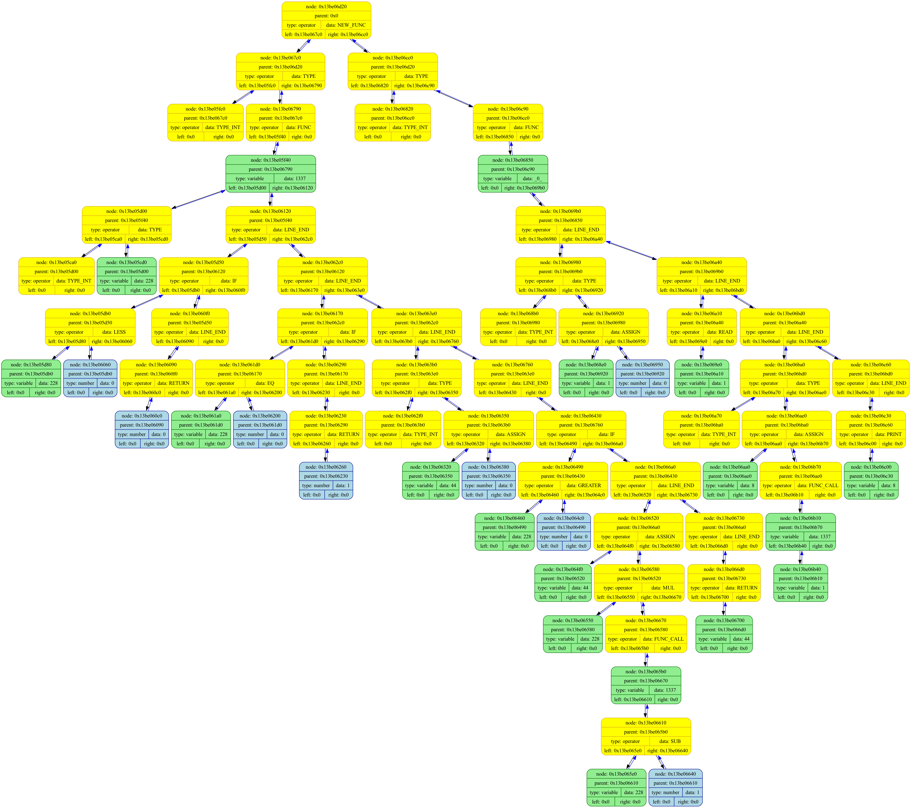

******************************************************************************
=========================== PROGRAM START ===========================
******************************************************************************
RUNNED AT Thu Dec 21 16:14:41 2023
GOT TOKEN[0], READING NEXT ON LINE [542]
GOT TOKEN[1], READING NEXT ON LINE [388]
GOT TOKEN[2], READING NEXT ON LINE [373]
GOT TOKEN[3], READING NEXT ON LINE [393]
GOT TOKEN[4], READING NEXT ON LINE [542]
GOT TOKEN[5], READING NEXT ON LINE [454]
GOT TOKEN[6], READING NEXT ON LINE [271]
GOT TOKEN[7], READING NEXT ON LINE [459]
GOT TOKEN[8], READING NEXT ON LINE [401]
GOT TOKEN[9], READING NEXT ON LINE [402]
GOT TOKEN[10], READING NEXT ON LINE [404]
GOT TOKEN[11], READING NEXT ON LINE [406]
GOT TOKEN[12], READING NEXT ON LINE [604]
GOT TOKEN[13], READING NEXT ON LINE [711]
GOT TOKEN[14], READING NEXT ON LINE [713]
GOT TOKEN[15], READING NEXT ON LINE [308]
GOT TOKEN[16], READING NEXT ON LINE [905]
GOT TOKEN[17], READING NEXT ON LINE [572]
GOT TOKEN[18], READING NEXT ON LINE [719]
GOT TOKEN[19], READING NEXT ON LINE [722]
GOT TOKEN[20], READING NEXT ON LINE [829]
GOT TOKEN[21], READING NEXT ON LINE [572]
GOT TOKEN[22], READING NEXT ON LINE [528]
GOT TOKEN[23], READING NEXT ON LINE [729]
GOT TOKEN[24], READING NEXT ON LINE [528]
GOT TOKEN[25], READING NEXT ON LINE [645]
GOT TOKEN[26], READING NEXT ON LINE [711]
GOT TOKEN[27], READING NEXT ON LINE [713]
GOT TOKEN[28], READING NEXT ON LINE [308]
GOT TOKEN[29], READING NEXT ON LINE [905]
GOT TOKEN[30], READING NEXT ON LINE [572]
GOT TOKEN[31], READING NEXT ON LINE [719]
GOT TOKEN[32], READING NEXT ON LINE [722]
GOT TOKEN[33], READING NEXT ON LINE [829]
GOT TOKEN[34], READING NEXT ON LINE [572]
GOT TOKEN[35], READING NEXT ON LINE [528]
GOT TOKEN[36], READING NEXT ON LINE [729]
GOT TOKEN[37], READING NEXT ON LINE [528]
GOT TOKEN[38], READING NEXT ON LINE [645]
GOT TOKEN[39], READING NEXT ON LINE [542]
GOT TOKEN[40], READING NEXT ON LINE [584]
GOT TOKEN[41], READING NEXT ON LINE [271]
GOT TOKEN[42], READING NEXT ON LINE [808]
GOT TOKEN[43], READING NEXT ON LINE [572]
GOT TOKEN[44], READING NEXT ON LINE [589]
GOT TOKEN[45], READING NEXT ON LINE [528]
GOT TOKEN[46], READING NEXT ON LINE [645]
GOT TOKEN[47], READING NEXT ON LINE [711]
GOT TOKEN[48], READING NEXT ON LINE [713]
GOT TOKEN[49], READING NEXT ON LINE [308]
GOT TOKEN[50], READING NEXT ON LINE [905]
GOT TOKEN[51], READING NEXT ON LINE [572]
GOT TOKEN[52], READING NEXT ON LINE [719]
GOT TOKEN[53], READING NEXT ON LINE [722]
GOT TOKEN[54], READING NEXT ON LINE [308]
GOT TOKEN[55], READING NEXT ON LINE [784]
GOT TOKEN[56], READING NEXT ON LINE [308]
GOT TOKEN[57], READING NEXT ON LINE [956]
GOT TOKEN[58], READING NEXT ON LINE [342]
GOT TOKEN[59], READING NEXT ON LINE [502]
GOT TOKEN[60], READING NEXT ON LINE [308]
GOT TOKEN[61], READING NEXT ON LINE [931]
GOT TOKEN[62], READING NEXT ON LINE [572]
GOT TOKEN[63], READING NEXT ON LINE [519]
GOT TOKEN[64], READING NEXT ON LINE [528]
GOT TOKEN[65], READING NEXT ON LINE [829]
GOT TOKEN[66], READING NEXT ON LINE [308]
GOT TOKEN[67], READING NEXT ON LINE [528]
GOT TOKEN[68], READING NEXT ON LINE [729]
GOT TOKEN[69], READING NEXT ON LINE [528]
GOT TOKEN[70], READING NEXT ON LINE [413]
GOT TOKEN[71], READING NEXT ON LINE [528]
GOT TOKEN[72], READING NEXT ON LINE [225]
GOT TOKEN[73], READING NEXT ON LINE [542]
GOT TOKEN[74], READING NEXT ON LINE [388]
GOT TOKEN[75], READING NEXT ON LINE [373]
GOT TOKEN[76], READING NEXT ON LINE [393]
GOT TOKEN[77], READING NEXT ON LINE [401]
GOT TOKEN[78], READING NEXT ON LINE [402]
GOT TOKEN[79], READING NEXT ON LINE [404]
GOT TOKEN[80], READING NEXT ON LINE [406]
GOT TOKEN[81], READING NEXT ON LINE [604]
GOT TOKEN[82], READING NEXT ON LINE [542]
GOT TOKEN[83], READING NEXT ON LINE [584]
GOT TOKEN[84], READING NEXT ON LINE [271]
GOT TOKEN[85], READING NEXT ON LINE [808]
GOT TOKEN[86], READING NEXT ON LINE [572]
GOT TOKEN[87], READING NEXT ON LINE [589]
GOT TOKEN[88], READING NEXT ON LINE [528]
GOT TOKEN[89], READING NEXT ON LINE [645]
GOT TOKEN[90], READING NEXT ON LINE [1164]
GOT TOKEN[91], READING NEXT ON LINE [308]
GOT TOKEN[92], READING NEXT ON LINE [528]
GOT TOKEN[93], READING NEXT ON LINE [645]
GOT TOKEN[94], READING NEXT ON LINE [542]
GOT TOKEN[95], READING NEXT ON LINE [584]
GOT TOKEN[96], READING NEXT ON LINE [271]
GOT TOKEN[97], READING NEXT ON LINE [808]
GOT TOKEN[98], READING NEXT ON LINE [342]
GOT TOKEN[99], READING NEXT ON LINE [502]
GOT TOKEN[100], READING NEXT ON LINE [308]
GOT TOKEN[101], READING NEXT ON LINE [519]
GOT TOKEN[102], READING NEXT ON LINE [589]
GOT TOKEN[103], READING NEXT ON LINE [528]
GOT TOKEN[104], READING NEXT ON LINE [645]
GOT TOKEN[105], READING NEXT ON LINE [1140]
GOT TOKEN[106], READING NEXT ON LINE [308]
GOT TOKEN[107], READING NEXT ON LINE [528]
GOT TOKEN[108], READING NEXT ON LINE [413]
GOT TOKEN[109], READING NEXT ON LINE [528]
GOT TOKEN[110], READING NEXT ON LINE [235]
--------------------DUMP CALLED--------------------
RUNNING FUNCTION main FROM FILE "frontend/main.cpp"(46)

END TIME: 16:14:30
--------------------------------------------------
******************************************************************************
============================ PROGRAM END ============================
******************************************************************************